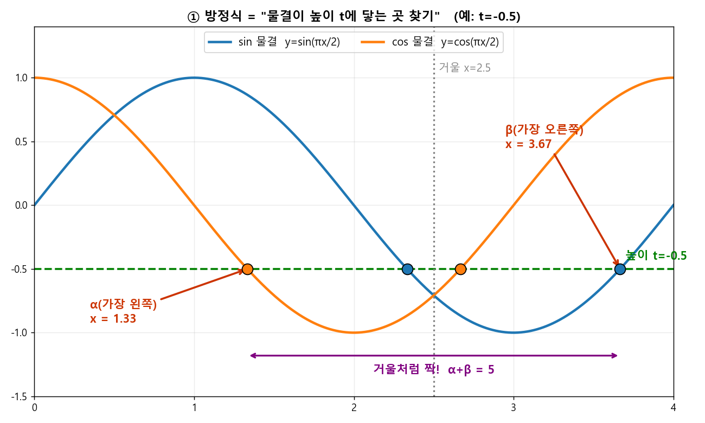
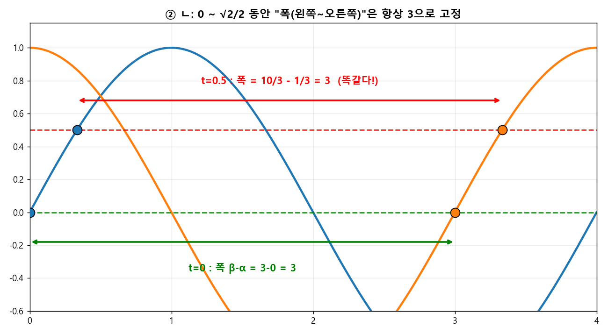
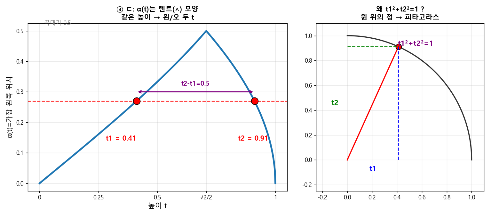

🧩 q437 ⭐ 최고난도 (평가원 기출)¶
단원: 삼각함수 — \(\alpha(t),\beta(t)\) 함수 분석 · 형태: 보기(ㄱㄴㄷ) 판별 · 정답: ② ㄱ, ㄴ
🔗 원본 (sources, 불변 — 링크만)¶
{kind=link}
🎯 문제¶
\(-1\le t\le1\). 방정식 \(\left(\sin\frac{\pi x}{2}-t\right)\left(\cos\frac{\pi x}{2}-t\right)=0\) 의 실근 중 \(0\le x<4\)에 있는 가장 작은 값 \(\alpha(t)\), 가장 큰 값 \(\beta(t)\). ㄱㄴㄷ 중 옳은 것.
🧱 0단계 — 그림부터 그리자 (가장 중요)¶
곱이 0이니 둘 중 하나가 0: \(\sin\frac{\pi x}{2}=t\) 또는 \(\cos\frac{\pi x}{2}=t\).

🖼️ 핵심 그림: 방정식 풀기 = "\(\sin\)·\(\cos\) 물결이 높이 \(t\)(초록 가로줄)에 닿는 점 찾기". 닿는 점의 \(x\)좌표가 실근, 가장 왼쪽 = \(\alpha\), 가장 오른쪽 = \(\beta\). 거울 \(x=2.5\)가 \(\sin\)↔\(\cos\)을 바꿔서 양 끝이 짝 → \(\alpha+\beta=5\).
두 함수 모두 주기가 4다(\(\frac{2\pi}{\pi/2}=4\)). 그래서 \(0\le x<4\)는 딱 한 주기. 기준점만 외우면 끝:
| \(x\) | 0 | 1 | 2 | 3 |
|---|---|---|---|---|
| \(\sin\frac{\pi x}{2}\) | 0 | 1 | 0 | −1 |
| \(\cos\frac{\pi x}{2}\) | 1 | 0 | −1 | 0 |
- \(\sin\frac{\pi x}{2}=t\) 의 두 해는 \(x=1\) 기준 좌우대칭(또는 \(x=3\) 기준).
- \(\cos\frac{\pi x}{2}=t\) 의 두 해는 \(x=0,4\)(즉 양 끝) 또는 \(x=2\) 기준 대칭.
핵심 도구 딱 하나: \(\boxed{\arcsin t+\arccos t=\dfrac{\pi}{2}}\) (이게 ㄱ·ㄴ을 다 푼다).
\(\theta=\frac{\pi x}{2}\)로 두면 \(x=\frac{2}{\pi}\theta\). 즉 "각도 → \(x\)"는 \(\times\frac{2}{\pi}\).
▶ ㄱ. \(-1\le t<0\) 이면 \(\alpha+\beta=5\) → 참 ✅¶
\(t<0\)일 때 해의 위치: - \(\cos\frac{\pi x}{2}=t\ (<0)\): \(\cos\)이 음수인 구간 \(x\in(1,3)\). 두 해 = \(x_1=\frac{2}{\pi}\arccos t\in(1,2)\) 와 \(4-x_1\in(2,3)\). - \(\sin\frac{\pi x}{2}=t\ (<0)\): \(\sin\)이 음수인 구간 \(x\in(2,4)\). 두 해 = \((2,3)\)과 \((3,4)\)에 하나씩, 큰 쪽 \(=4+\frac{2}{\pi}\arcsin t\in(3,4)\).
가장 작은 값 = \(\cos\)쪽 \((1,2)\) → \(\alpha=\dfrac{2}{\pi}\arccos t\). 가장 큰 값 = \(\sin\)쪽 \((3,4)\) → \(\beta=4+\dfrac{2}{\pi}\arcsin t\).
왜 항상 5인가? \(t\)가 변해도 \(\arcsin t+\arccos t\)는 언제나 \(\frac\pi2\)로 고정이라, \(t\)가 사라진다. 이게 이 문제의 심장.
▶ ㄴ. \(\{t:\beta-\alpha=\beta(0)-\alpha(0)\}=\{t:0\le t\le \frac{\sqrt2}{2}\}\) → 참 ✅¶

🖼️ \(t=0\)이든 \(t=0.5\)든 "가장 왼쪽~가장 오른쪽 폭"이 똑같이 3. 가로줄을 \(0\sim\frac{\sqrt2}{2}\)로 올려도 거울 대칭이라 폭이 고정된다.
기준값 \(\beta(0)-\alpha(0)\) 먼저. \(t=0\): 해는 \(\sin=0\)에서 \(x=0,2\), \(\cos=0\)에서 \(x=1,3\) → 전체 \(\{0,1,2,3\}\). 그래서 \(\alpha(0)=0,\ \beta(0)=3\), 기준값 \(=3\).
이제 \(\beta(t)-\alpha(t)=3\) 인 \(t\)를 전부 찾는다. \(t\)의 부호로 나눈다.
(i) \(t<0\): ㄱ에서 \(\alpha=\frac2\pi\arccos t=1-\frac2\pi\arcsin t,\ \beta=4+\frac2\pi\arcsin t\). $\(\beta-\alpha=3+\frac{4}{\pi}\arcsin t<3\quad(\arcsin t<0)\ \Rightarrow\ \text{불가}.\)$
(ii) \(t=0\): \(\beta-\alpha=3\) ✅ (포함).
(iii) \(t>0\): 해 4개 = \(\sin\)쪽 \(a_1=\frac2\pi\arcsin t,\ a_2=2-a_1\in(0,2)\), \(\cos\)쪽 \(b_1=\frac2\pi\arccos t\in(0,1),\ b_2=4-b_1\in(3,4)\). 가장 큰 값은 항상 \(\beta=b_2=4-\frac2\pi\arccos t\). 가장 작은 값은 \(\alpha=\min(a_1,b_1)\). \(\arcsin t\) vs \(\arccos t\) 비교 → 갈림목은 \(t=\frac{\sqrt2}{2}\) (둘 다 \(\frac\pi4\)):
- \(0<t\le\frac{\sqrt2}{2}\): \(\arcsin t\le\arccos t\) → \(\alpha=a_1=\frac2\pi\arcsin t\). $\(\beta-\alpha=4-\frac2\pi(\arccos t+\arcsin t)=4-\frac2\pi\cdot\frac\pi2=4-1=3\ ✅\)$
- \(\frac{\sqrt2}{2}<t\le1\): \(\alpha=b_1=\frac2\pi\arccos t\). $\(\beta-\alpha=4-\frac{4}{\pi}\arccos t>3\quad(\arccos t<\tfrac\pi4)\ \Rightarrow\ \text{불가}.\)$
따라서 \(\beta-\alpha=3\) 인 곳은 정확히 \(\boxed{0\le t\le \frac{\sqrt2}{2}}\). 보기와 일치 → 참 ✅
포인트: \(0\le t\le\frac{\sqrt2}{2}\)에선 "작은 해는 \(\sin\)쪽, 큰 해는 \(\cos\)쪽"이라 다시 \(\arcsin+\arccos=\frac\pi2\) 마법으로 \(t\)가 소거된다.
▶ ㄷ. \(\alpha(t_1)=\alpha(t_2),\ t_2-t_1=\frac12\Rightarrow t_1t_2=\frac13\) → 거짓 ❌ (실제 \(\frac38\))¶

🖼️ \(\alpha(t)\)는 텐트(∧) 모양 → 같은 높이에 두 \(t\)가 걸린다(\(t_1,t_2\)). 두 위치가 같다는 건 \(t_1,t_2\)가 한 각의 \(\sin\)·\(\cos\)값이라는 뜻 → 단위원 피타고라스로 \(t_1^2+t_2^2=1\). 곱셈공식으로 \(t_1t_2=\frac38\) (≠\(\frac13\)).
먼저 \(\alpha(t)\)의 모양(\(t\in[-1,1]\)):
| \(t\) 구간 | \(\alpha(t)\) | 값 변화 |
|---|---|---|
| \([-1,0)\) | \(\frac2\pi\arccos t\) | \(2\to1\) (감소, 항상 \(>1\)) |
| \(\{0\}\) | \(0\) | — |
| \((0,\frac{\sqrt2}{2}]\) | \(\frac2\pi\arcsin t\) | \(0\to\frac12\) (증가) |
| \([\frac{\sqrt2}{2},1]\) | \(\frac2\pi\arccos t\) | \(\frac12\to0\) (감소) |
\(t>0\) 부분이 \(\frac12\)를 꼭짓점으로 한 ∧(텐트) 모양. 음수 구간은 \(\alpha>1\)이라 양수 구간(\(\alpha\le\frac12\))과 절대 같은 값이 안 됨.
그래서 \(\alpha(t_1)=\alpha(t_2)\)인 서로 다른 두 값은 반드시 텐트의 양쪽 가지에서 하나씩: $\(\frac2\pi\arcsin t_1=\frac2\pi\arccos t_2\ \Rightarrow\ \arcsin t_1=\arccos t_2\ \Rightarrow\ t_1=\sqrt{1-t_2^2}\ \Rightarrow\ \boxed{t_1^2+t_2^2=1}\)$
여기에 \(t_2-t_1=\frac12\) 대입: $\((t_2-t_1)^2=t_1^2+t_2^2-2t_1t_2 \Rightarrow \tfrac14=1-2t_1t_2 \Rightarrow t_1t_2=\frac{3}{8}.\)$
\(\dfrac38\ne\dfrac13\) → ㄷ 거짓 ❌. (검산: \(t_1=\frac{-1+\sqrt7}{4}\approx0.411,\ t_2\approx0.911\), 곱 \(\approx0.375=\frac38\).)
ㄷ의 함정: 텐트라서 "양쪽이 같다"까진 쉽지만, 조건이 \(t_1^2+t_2^2=1\)(합) 이라 곱은 \(\frac38\). \(\frac13\)로 착각하게 만든 오답 유도.
✅ 최종 답: ② ㄱ, ㄴ¶
🧠 한 줄 교훈¶
- \(\arcsin t+\arccos t=\frac\pi2\) 하나로 ㄱ·ㄴ의 \(t\)가 통째로 소거된다 — "작은 해는 \(\sin\), 큰 해는 \(\cos\)" 짝을 만들면 보인다.
- \(\alpha(t)\)를 구간별 그래프(텐트)로 그리면 ㄷ의 관계식 \(t_1^2+t_2^2=1\)이 즉시 나온다.